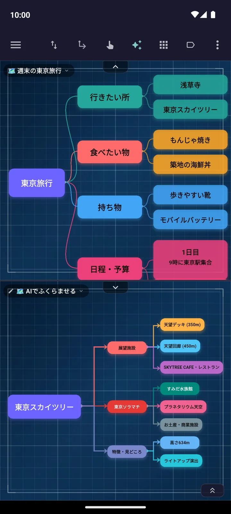
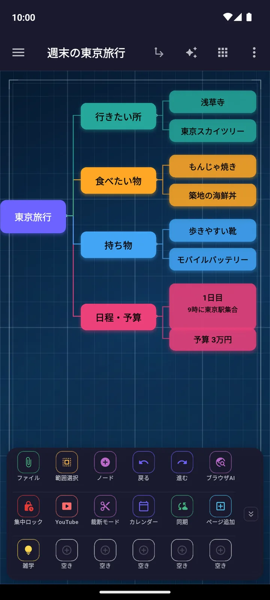
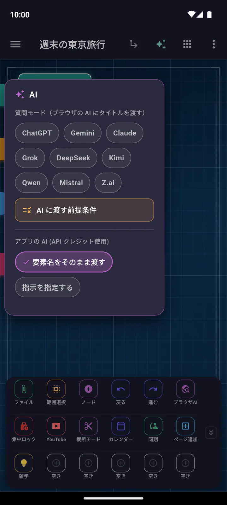
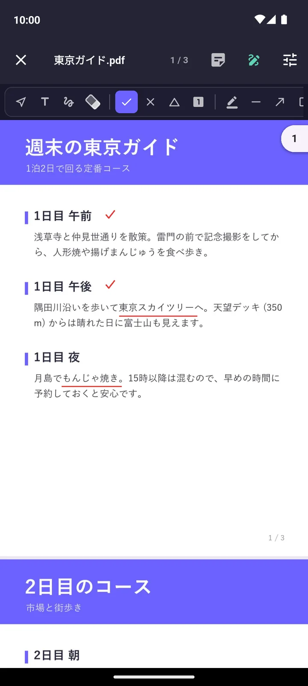

Android 版独有功能
专为随身携带与「边做边用」打造的移动端功能

- 连点器（多步骤、流程式）在其他应用上方悬浮操作面板，按顺序自动执行点击、滑动、图像识别与 OCR 条件分支（附清晰易懂的首次权限引导）
- 静音相机（照片、视频）＆ OCR、二维码读取在图书馆或教室也能无快门声拍摄照片与视频，并当场进行 OCR 文字识别或二维码读取
- 上下 / 左右分屏 ＆ 120Hz/144Hz 渲染支持双分屏与悬浮便签，在高刷新率设备上流畅渲染，并支持专注锁定
思维导图 ＆ 6 种页面
即使是触控操作，也具备与 PC 同等的 6 种页面类型及交互式教程

- 思维导图 ＆ 图库可容纳图片、视频、PDF、表格、公式的无限导图，以及将资料平铺排列的二维图库
- 自由笔记 ＆ 文档可用触控笔或手指自由书写的手写画布，以及带大纲目录的文档页面
- Markdown ＆ 视频编辑、AI 工作室支持 Mermaid、LaTeX、差异对比的 Markdown，以及时间轴视频编辑与 AI 幻灯片生成
AI（三大 AI ＆ 预付费方式）
无需 API 密钥，Free 套餐即可立即使用三大 AI

- 无需 API 密钥的预付费 AI充值 $10，按用量扣费，无需 API 密钥即可使用 ChatGPT / Gemini / Claude
- 导图自动生成、记忆卡、AI 对话练习可根据主题或 PDF 生成导图、题库与记忆卡，并支持语音面试与语言角色扮演
视频、PDF、Office、资料调研、云同步
观看、直接编辑、备考，乃至与 PC 的 3-Way 同步，全部在手机上完成

- 无广告 YouTube ＆ PDF、Office 直接编辑无广告观看 YouTube，笔迹直接写入 PDF 并保存，Word / Excel / PowerPoint 直接编辑
- 搜索、趋势、冷知识、性能对比、317 项考试备考双屏 Google 搜索、9 大领域趋势、冷知识、CPU/GPU/手机/LLM 对比、四大电商商品搜索、AI 备考
- 自动保存、恢复中心、3-Way 云同步即时自动保存与恢复中心守护数据，并可与 Windows 无冲突地进行 3-Way 自动合并同步（Max）